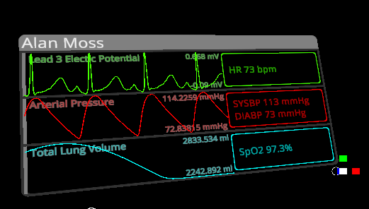
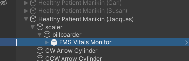
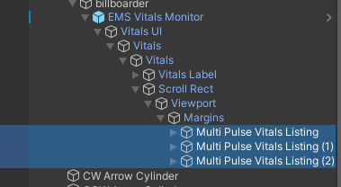
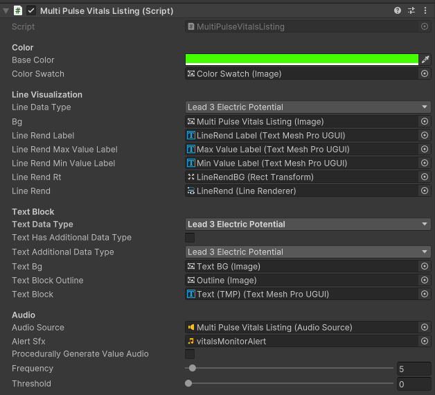

|
FirstModulAR 0.1.0
|
|
FirstModulAR 0.1.0
|

Displays several vitals from an NetVitalsProvider.
Produces alarm visual effects and sound effects if the any of the NetVitalsProvider's VitalsThresholds are reached.
Drag and drop the EMS Vitals Provider prefab anywhere as a child of a gameobject with a NetVitalsProvider.

In the example shown above, the Healthy Patient Manikin (Jacques) gameobject has the NetVitalsProvider component installed. At runtime, the NetVitalsProvider will find its child MultiPulseVitals component and establish a link automatically.
If you really want to customize the Vitals Display from its default vitals and colors, you may do so by drilling into the prefab's hierarchy and adjusting the MultiPulseVitalsListing components childed under the Margins gameobject.

In the inspector, for each listing, you can select:
BaseColor: The color of the listingLineDataType: The vital to display on the line graph (left hand side of the listing)TextDataType: The vital to display on the text field (right hand side of the listing)TextHasAdditionalDataType: Whether the text field should display a second vital in addition to the primary vital defined in TextDataType. This can be useful to, for example, should Systolic and Diastolic blood pressure in the same box.TextAdditionalDataType: If TextHasAdditionalDataType is true, the second vital to show in the text box